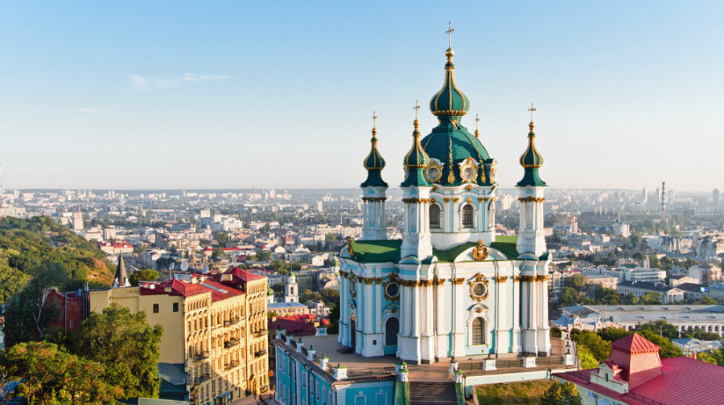

Березень 5, 2020
Київська область

Найстаріша область Північної України, утворена в 1932 р. Клімат помірно континентальний, м'який, з тривалою порівняно теплою зимою і теплим, вологим літом. Дніпро - головна ріка України - ділить область і всю країну на право- і лівобережну частини.
Історія
Перші поселення на Київщині з'явилися в пізньому палеоліті (20-15 тис. років тому). Хліборобсько-скотарські племена мідного віку (VІ-ІІІ тис. до н. е.) залишили по собі археологічні пам’ятки трипільської культури. В області відомі понад 120 поселень та курганних могильників доби бронзи (ІІІ-І тис. до н.е.) і близько 90 археологічних пам'яток скіфського часу (VІІ-ІІІ ст. до н. е.).
З появою племінних об'єднань-князівств найбільш впливове утворилося у полян, яке згодом стало тим центром, навколо якого в IX-XII ст. сформувалася могутня держава - Київська Русь. На території сучасної області в цей період існували сотні поселень, швидко розвивалася економіка, торгівля і культура.
Потім ці землі переходять під контроль Литви, а після Люблінської унії 1569 р. - Речі Посполитої. Завдяки Визвольній війні українського народу під проводом Б. Хмельницького більша частина області позбувається польського панування і тут запроваджується новий полковий адміністративно-територіальний устрій.
Київська губернія займала значно більшу територію, ніж нинішня область. Після Жовтневої революції в Росії в 1918 р. у Києві була здійснена невдала спроба створити незалежну українську державу. Під час Великої Вітчизняної війни в 1941-1943 рр. область була окупована фашистською Німеччиною.
На території Київської області збереглися різностильові православні й католицькі культові споруди XVII-XX ст. Серед архітектурних пам'яток, що дійшли до наших днів, будівлі цивільного призначення займають менш значне місце. Вони представлені палацами, адміністративними будинками, парковими спорудами, меморіальними комплексами та пам'ятками ХVIIІ-ХХ ст.